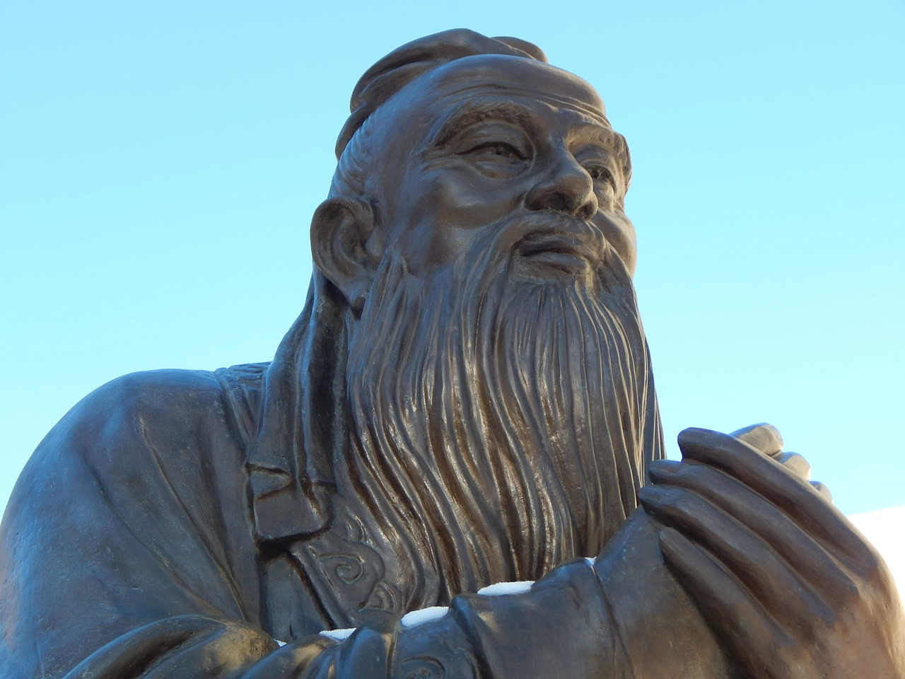

馬麥之報
淨空法師
在中國，道德最高的，為舉世之人所尊敬的，無過於孔子。而孔子的一生，我們從歷史來看，他曾經「絕糧於陳，被圍於匡」，周遊列國的時候「卒無所遇」。孔子只有一個兒子，在他五十歲時過世了，幸虧還留一個孫子傳宗接代，這是世間聖人。
講到出世間的聖人，釋迦牟尼佛當年在世，也曾經有三個月「馬麥之報」，出去托缽遇到了饑荒，沒有東西吃，就吃人家餵馬的糧食。世出世間的聖人都沒有例外的，我們豈能說都不遭災難！
何以大聖人還要遭難？這是過去生中的因果，沒有成聖成賢之前也是凡夫，凡夫豈有不造業之理！
等而下之，講到賢人，顏回是孔子最得意的門生，傳承孔子的學問，他也是短命，冉伯牛也短命。子夏瞎了眼睛，左丘明晚年也瞎了眼睛，子路也是孔子得意的學生，死狀慘不忍睹。我們在歷史上看到屈原忠君愛國，最後投河而死。
所以，大聖、大賢都不能在一生中，有順無逆，那我們在一生當中，處在逆境裡又算得了什麼？
我們今天弘法利生，或者在社會上盡忠報國，為國為民，遭遇到一些人的陷害，遇到一些讒言，想想古聖先賢，我們的遭遇已經非常幸運了。若能常常作如是觀，常常如是想，我們就能樂天知命，心平氣和。
人生在世，對自己而言，不過就是養活身口而已，所謂是「日食三餐，夜眠六尺」，粗衣也能禦寒、遮體，蔬菜也能下飯，也有足夠的養分。因此，一定要懂得知足常樂，逆來順受！